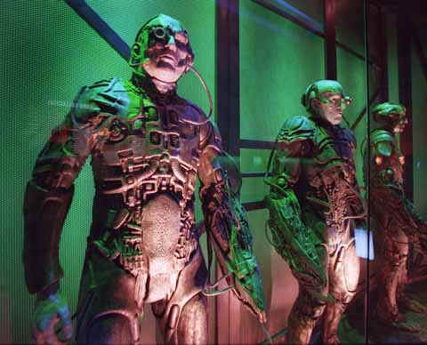
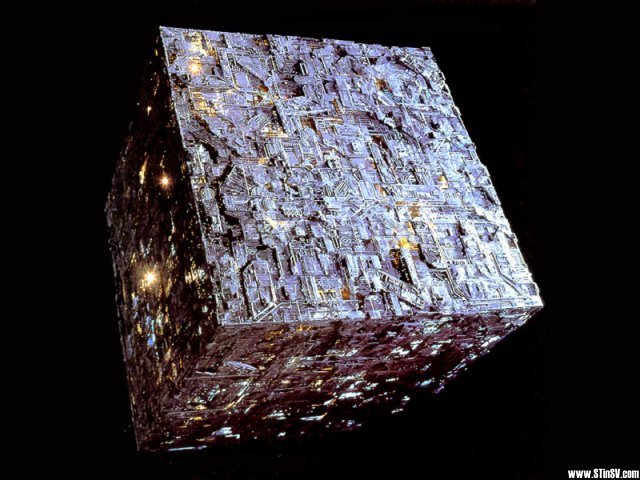

"Resistance is futile". If you’re a Star Trek fan, hearing those words probably immediately triggers one thought: the Borg. The Borg is the ultimate nightmare: humanity, enslaved by a computer. Luckily, it is only fiction. Or is it?
In Star Trek, they come in a cube. A huge space ship it is, filled with
millions of people. Well -- they’re not really people. They are the Borg.
The people in the cube have no free will, no mind of their own. They are One.
They’re plugged into the mainframe computer called ‘the Borg’. They’re cyber slaves.
Poor little creatures.
But that’s science fiction, right? Not so. In fact, as we speak, the Borg is lurking just around the corner, waiting for its chance. It won’t come in a cube from outer space though, but from the very place you’re on right now: the Internet. And if it comes, resistance will, indeed, be futile.
The signs are disturbing. Let’s do a little experiment. Please, find out what ‘auparishtaka’ is.
Done that?
Ok, all of you readers have probably followed exactly the same routine. You’ve opened Google and entered ‘auparishtaka’. All of you will have found the same search results. You will have visited the same websites. Have absorbed the same information. For a very brief and fleeting moment, you were One.
Silly example, you snort.
But hold on -- that was just
to warm you up a little. The real stuff is yet to come. Brace yourself: what you are about to
read, could change the way you see your humble computer and the Internet
forever.
One: We are being cyborged
Already, there are many experiments with simple implants being inserted into people’s brains. Most of them are there for our health: the implants bring back (some) hearing or even some eyesight, or cure you from terrible conditions like depressions or extreme phobia’s.
But some implants have a more ‘luxurious’ function. They connect to your brain in order to make you move your artificial limb, if you happen to be missing one. Or they make you control the cursor of your computer by mind control, if you’re paralyzed.
Most experts agree that that's just the beginning. Eventually, we will see more and more implants. Need to learn Greek? Just have a cyber doctor plug a tiny chip into your brain, much like a memory stick. Want better eyesight? The doc will upgrade your visual cortex a bit, Vision 2.2. And so on, and so on.
Of course, these are exciting, good things. But there’s a downside. Computer hardware isn’t going to be the only thing that’s entering your brain. Along with it, the Web enters your mind.
Two: We are being assimilated
In small, high-tech countries like Singapore and The Netherlands, the Internet is everywhere you go and everywhere you look already. Gaming, shopping, dating, e-mailing, working, reading about the end of the world -- it’s all done over the Internet.
And the Web is still on the rise. Not only is it on ever more home computers. As we speak, it is entering our TV-sets. It is conquering our laptops and our cell phones. It is sneaking into our car computers and household machinery. In fact, the Internet is about to incorporate every device we associate with ‘communication’.
It is only likely the last ‘device’ will be us. Of course, the computers implanted in our brains will be connected to the Internet. The advantages are just too big not to let this happen. We will have Internet in our ears, and Internet on our eyes -- literally. Our brains will be permanently online.
So, you think of ‘aupraishtaka’, and instantly know that it is just another word for... Ehm, yes, that. You think of your auntie in Timbuktu, and your auntie thinks back at you, setting up a telepathic chat session, brain-to-brain. You think of captain Jean-Luc Picard, and his photograph will instantly pop up in your mind's eye. It is sent straight into your visual cortex, where it is translated into ‘image’ by your brain. You can hear Jean-Luc's voice saying ‘Make it so’, if you like, or think up information about the actor playing Jean-Luc, and what movies he’s in. Convenient!
That's pretty difficult to imagine, don't you think? Well -- it gets a bit weirder. With your brain online, ‘you’ will no longer be exclusively ‘yours’. You will, in a way, become a local cache for the Internet. Your brain will become the Internet’s work memory. And that’s where things turn, well... pretty nasty.
Three: We are being Borged
So, here you are. You’ve got a computer plugged into your brain. Your mind is online all of the time. You’re one smart cyborg, that’s what you are!
But what is online, is vulnerable. Someone could actually hack your head. Some evil genius could virus your mind, or spyware your thoughts. We can agree on one thing: that would be, well, more than a bit confusing.
Probably the biggest danger are viruses that build themselves. Already, there are many experiments with software that becomes smarter -- software that evolves, by constantly improving itself. With every inhabitant of the planet online, such a virus will have at its disposal plenty of calculating power.
It is speculative, but perhaps you could call a virus like this ‘alive’. Perhaps you could say it has a will of its own. You might even call it The Borg.
So, just picture it: one moment, you’re doing fine -- and then, suddenly, you loose control. In the mild case, you’ll start having weird, uncontrollable hallucinations. You’ll hear some internal voice telling you that resistance is futile, or you will experience some reality that isn’t there. You will go insane. In the more extreme case, you’ll suddenly find your body is no longer under your control. Somebody -- or something -- is controlling you, like a puppet. You will have become a prisoner, locked up in your own body.
The Borg might order you to do all kinds of things. For starters: to eliminate everyone who isn’t assimilated yet. Against your will, the Borg will force you to hunt down everybody who hasn’t got an internal brain computer. You will be forced to operate on them and turn them into cyborgs, too. So there you are: suddenly, you find yourself operating on somebody’s brain -- without neither your nor the patient’s consent.
Perhaps the Borg will even order you to build a cube-shaped space ship and go out, in search of more life-forms to assimilate. To the Borg, more slaves means: more calculating power.
So: to Borg or not to Borg?
Perhaps you shrug your shoulders. Really, how bad can it be? People being assimilated by the Internet... C’mon, that’s just too much.
Then again -- maybe it isn’t. Remember the Internet as a mass medium is only some 10, 15 years old. That’s less than 0,001 percent of the time our species is around on this planet! Already, computers and the Internet have totally re-shaped our world. And we can be sure of one thing: it won't stop there.
Of course, the Internet, as it is now, has little to do with Borgs and cube-shaped space ships. It is as dead as a doornail. It doesn't 'want' anything. The Web is still just a bunch of bits and bytes, sitting passively on hard disks around the world.
But the self-learning software we mentioned before could change all that. Say, we’ll make a self-learning piece of software that has one assignment: "Find a cure for cancer". Actually, software like this already exists: it is software that automatically checks certain molecules to see if their shape is suitable for curing cancer.
Ok, now suppose this software gets smarter. It could find new, creative ways to do its task. Like: "Hey, let’s enslave all these silly little humans. Let’s force them to build a giant cube and go out in space to look for a cure for cancer!" Aw, that would be so dumb...
Still, there’s one small straw of hope to cling on to. Nobody can foresee the future. The Borg Problem seems realistic. But so do other scenarios. Perhaps we will be able to erect some kind of advanced firewall between our computers and the thing we call our mind. Or perhaps we will be able to see the Borg coming, and manage to stop it in time.
And if we don’t...
Well, there’s always this. Perhaps going out in a cube and monotonely saying
"resistance is futile" to everyone we meet will turn out a funny thing
to do after all. We will see all the corners of the Galaxy, scare the shit out of
everybody we encounter, know what ‘aupraishtaka’ means and find a cure for
cancer.
Really, being the Borg isn't all bad.